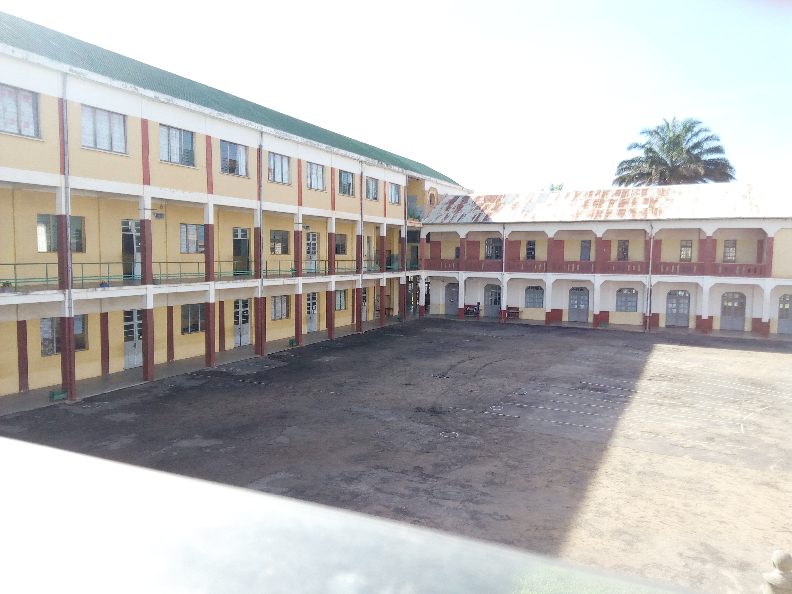

Généralités
La classe de sixième est considérée comme un temps d’adaptation au collège. L’accueil et l’intégration des élèves fait l’objet d’une attention particulière.
Programmes de quelques matières:
Français
- Analyse de la phrase
- Les fonctions grammaticales
- Orthographe grammaticale
- Orthographe lexicale
- Quelques homonymes ou homophones
- Conjugaison à l'indicatif
- Valeurs du présent
- Domaines lexicaux
- L'expression écrite
Maths
- Organisation et gestion de données. Fonctions
- Proportionnalité
- Organisation et représentation de données
- Nombre et calculs
- Nombre entiers et décimaux
- Opérations
- Nombres en écriture fractionnaire
- Géométrie
Sciences naturelles
- Caractéristiques de l’environnement proche et répartition des êtres vivants
- Le peuplement d’un milieu
- Origine de la matière des être vivants
- Des pratiques au service de l’alimentation humaine
- Partie transversale : diversité, parentés et unité des êtres vivants
Les professeurs:
- Malagasy: Mr Elie
- Français: Mr Osni
- Anglais: Mme Carole
- Histoire: Mme Lanja
- Sciences: Mr Gérard
- Maths : Mr Théo
- Physique Chimie: Mme Tahina
Les objectifs dans ce niveau
L'objectif principal est de faciliter l'adaptation de l'élève qui passe du primaire au premier cycle. Les enseignants ont reçu ce consigne et font de leur mieux afin d'atteindre cet objecif.
Profil d'un étudiant de la classe de 6ème
| Caractère | Profil |
|---|---|
| Age | 11 |
| Diplome | CEPE |
| Etat | Normal |
La tenue

Le blouson CSFX, inventé en 2015 afin de rendre la tenue beaucoupplus correcte et d'avoir la même blouson pour chaque étudiant surtout lors de l'hiver. Celui-ci est la modèle du premier cycle.